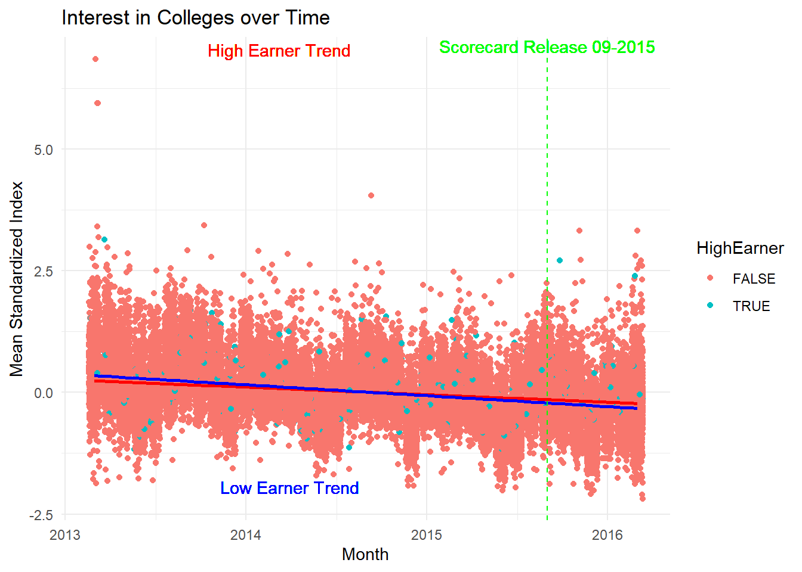

Addressing college interest as it relates to high-earning colleges
In September 2015, the College Scorecard became available to the public. The Scorecard released a wealth of information about colleges including incomes of graduates, SAT and ACT scores of incoming students, and the types of degrees awarded. The current question proposed is: did the release of the Scorecard shift student interest of high-earning colleges relative to low-earning ones? To start to understand this relationship, a scatter plot was created investigating the relationship of the mean_standardized_index (a measure of Google searches used as a proxy for interest in colleges) with time. A green line designates before and after the release of the College Scorecard. The first thing to note when examining this relationship is that there appears to be a slight decrease in search interest of all schools over time. However, high-earning versus low-earning schools shows that low-earning schools experienced a larger decrease in search interest (as can be observed by the slope of the trend-line). While this graph gives insight into what we might see in a regression analysis, it is flawed in that it shows the trend-line over time. To appropriately answer this question, a regression should be performed using dummy variables for Scorecard and high-earning colleges.
ggplot(cleaned_data, aes(x = month, y = mean_standardized_index, color = HighEarner)) +geom_jitter() +geom_smooth(data = cleaned_data %>%filter(HighEarner), method ='lm', se =FALSE, color ='red') +geom_smooth(data = cleaned_data %>%filter(!HighEarner), method ='lm', se =FALSE, color ='blue') +geom_vline(xintercept =as.numeric(as.Date("2015-09-01")), linetype ="dashed", color ="green") +geom_text(aes(x =as.Date("2015-09-01"), y =max(cleaned_data$mean_standardized_index), label ="Scorecard Release 09-2015"), color ="green", hjust =0.5, vjust =-0.5) +geom_text(data = cleaned_data %>%filter(HighEarner), aes(label ="High Earner Trend"), x =max(cleaned_data$month), y =max(cleaned_data$mean_standardized_index), color ='red', hjust =3, vjust =-0.2) +geom_text(data = cleaned_data %>%filter(!HighEarner), aes(label ="Low Earner Trend"), x =max(cleaned_data$month), y =min(cleaned_data$mean_standardized_index), color ='blue', hjust =3, vjust =-0.4) +labs(title ="Interest in Colleges over Time",x ="Month",y ="Mean Standardized Index") +theme_minimal()
Warning: Use of `cleaned_data$mean_standardized_index` is discouraged.
ℹ Use `mean_standardized_index` instead.
`geom_smooth()` using formula = 'y ~ x'
`geom_smooth()` using formula = 'y ~ x'

OLS Model
To further examine this question, a fixed-effects model was performed where mean_standardized_index is the dependent variable and HighEarner and ScoreCard individually and as a interaction are the dependent variables. mean_standardized_index is a standardized proxy for school interest. HighEarner and ScoreCard are dummy variables, where 1 is assigned to these values if they are TRUE. The interaction term is included to capture the interactive effect of the two independent variables.
# Regression Models regressing google searches on ScoreCard and highearnersmodel <-feols(mean_standardized_index ~ HighEarner + ScoreCard + HighEarner * ScoreCard, data = cleaned_data)
Regression Analysis
The etable(model) shows an intercept of this model is 0.0474, which indicates the search interest of low-earning colleges before the Scorecard was introduced (when all other coefficients are 0). It is highly significant to 0.1%. HighEarner variable has a coefficient of -0.0245. With a p-value of greater than 5%, it is not statistically significant. The ScoreCard variable has a coefficient of -0.2146 and is considered highly significant. This implies that the introduction of the College Scorecard has a negative effect that is significant on the mean_standardized_index. Finally, the interaction variable HighEarner x ScoreCard has a coefficient of 0.1223 and is considered moderately significant to 1%. The interaction between being a HighEarnerTRUE and the ScorecardTRUE has a moderate positive effect on the mean_standardized_index. The adjusted R-squared is relatively low (0.02118) indicating there might be factors in the error term that were not included in the model that could potentially influence the mean_standardized_index. However, none of these variables were determined to be a source of omitted variable bias and were therefore excluded from this model.
In conclusion, the introduction of the College Scorecard increased search activity on Google Trends for colleges with high-earning graduates by 0.1223 units relative to what it did for colleges with low-earning graduates, with a standard error of 0.0420. The result comes from the HighEarnerTRUE x ScoreCardTRUE coefficient in my regression.